Electrical
267 parts Out of stock
Out of stock*TAKEOFF* 1999 - 2002 Dodge Viper Left Door Wiring Harness - 04763075AE
Part # 04763075AE
$250.00
 Out of stock
Out of stock006: 96-02 Viper Fuel Pump Relay, USED* 4848193
Part # 04848193
$80.00
 Out of stock
Out of stock03 - 04 VIPER ENGINE WIRE HARNESS 05037287AE ENGINE SIDE
Part # 05037287AE
$495.00
 Out of stock
Out of stock1992 - 1994 Dodge Viper RT/10 Key Fob Transmitter - 04469341
Part # 4469341
$165.00
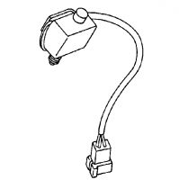
1992 - 1994 Dodge Viper RT/10 Stop Lamp/Speed Control Switch
Part # BWD S6058
$50.00
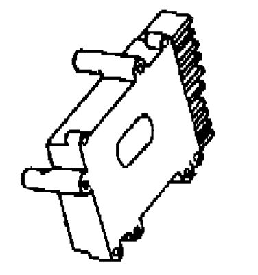
1992 - 1995 Dodge Viper Ignition Controller - 04708229
$538.00
 Out of stock
Out of stock1992 - 1995 Dodge Viper RT/10 Spark Plug Wire Set - 04638758
Part # 4638758
$179.99

1992 - 1995 Dodge Viper RT10 Ignition Coil 4-pin 04643178
$259.99
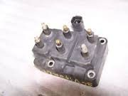
1992 - 1995 Dodge Viper RT10 Ignition Coil 6-pin 04643177
$155.00
 Out of stock
Out of stock1992 - 1995 Dodge Viper Windshield Wiper Controller - 4642529 USED RECYCLED TAKE OUT
Part # 4642529
$125.00
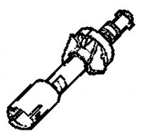
1992 - 1996 & 2003 - 2010 Dodge Viper Hood Switch - 04687594AB
$29.00
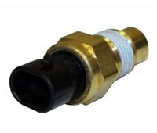
1992 - 1996 Dodge Viper Coolant Temperature Sensor - 05226374
Part # 05226374
$75.00

1992 - 1996 Dodge Viper Fuse Block Cover - 04643775
Part # 04643775
$22.00

1992 - 1996 Dodge Viper RT/10 A/C Drive Belt - Q4070775
Part # Q4070775
$80.00
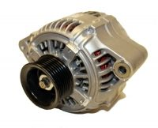
Out of stock1992 - 1996 Dodge Viper RT/10 Alternator Assembly - 4642031
Part # 4642031
$249.99
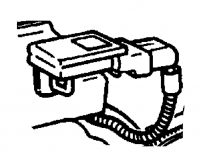
Out of stock1992 - 1996 Dodge Viper RT/10 MAP Sensor - 56026770
Part # 56026770
$100.00
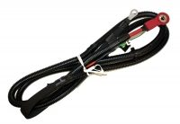
1992 - 1996 Dodge Viper RT/10 Positive Battery Cable Harness - 04642603
Part # 04642603
$100.00
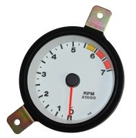
Out of stock1992 - 1996 Dodge Viper RT/10 Tachometer - 04642131
Part # 04642131
$85.00
 Out of stock
Out of stock1992 - 1996 Dodge Viper RT/10 WITHOUT A/C Drive Belt - 05245316
Part # 05245316
$45.00
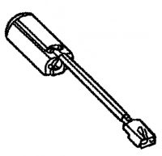
1992 - 1997 Dodge Viper Clutch Starter Interlock Switch - 53007944
Part # 53007944
$254.00
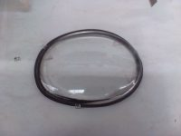
Out of stock1992 - 1999 Dodge Viper Left Fog Lamp Cover - 04643819
Part # 4643819
$179.99
 Out of stock
Out of stock1992 - 1999 Dodge Viper Right Fog Lamp Cover - 04643818
Part # 4643818
$149.99

1992 - 1999 Dodge Viper RT/10 GTS Fuel Gauge - 04848581AB
$75.00

1992 - 2002 Dodge Viper Ambient Air Intake Temperature Sensor - 05227805
Part # 05227805
$63.00

1992 - 2002 Dodge Viper Cigarette Lighter Power Outlet Shell - 3747633
Part # 3747633
$36.00

1992 - 2002 Dodge Viper Crankshaft Position Sensor - 04848416
Part # 04848416 04642925 PC199
$159.00
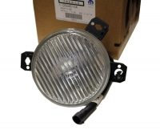
Out of stock1992 - 2002 Dodge Viper Fog Lamp Assembly - 05245104
Part # 05245104
$134.00

1992 - 2002 Dodge Viper Front Side Marker - 04642930
Part # 04642930
$40.00
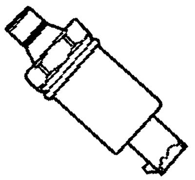
1992 - 2002 Dodge Viper Oil Pressure Sending Unit - 56026779AB
$50.00

1992 - 2002 Dodge Viper RT/10 GTS VOLT Gauge - 04642135AB
Part # 4642135AB
$144.00
 Out of stock
Out of stock1992 - 2002 Dodge Viper Spark Plug Set - SP0RC12LYC
Part # SP0RC12LYC
$40.00
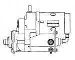
1992 - 2002 Dodge Viper Starter - 5037199AB
Part # 5037199AB
$524.00

1992 - 2002 Dodge Viper Temperature Control Assembly - 05245298
Part # 05245298
$250.00
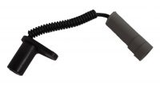
Out of stock1992 - 2002 Dodge Viper Transmission Speed Sensor - 04848214
Part # 04848214
$250.00
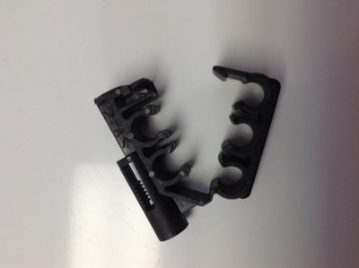
1992 - 2004 Dodge Viper Spark Plug Wire Separator Loom - 05245237AB
Part # 5245237AB
$19.95

1992 - 2010 Dodge Viper Cigarette Lighter Outlet Cap - 04595522 56008852
Part # 56008852 4595522 53128244
$4.00
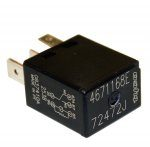
1992 - 2010 Dodge Viper Electrical Relay - 04671168
$20.25
 Out of stock
Out of stock1992 - 2010 Dodge Viper Hex Nut / Coned Washer M6 x 1.00 - 06101447
Part # 6101447
$5.00
Out of stock
1992 - 2013 Dodge SRT Viper Park and Turn Signal Socket - 04399639
Part # 04399639
$12.00
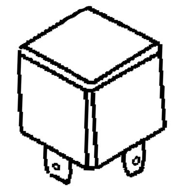
1992-1995 Dodge Viper Starter Relay - 04643528
Part # 04643528
$57.00
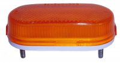
Out of stock1993 - 2000 Dodge Viper Front Side Marker (Europe) - 04643939
Part # 4643939
$50.00
Out of stock
1994 - 2010 Dodge Viper Cigarette Lighter Assembly - 04685370
Part # 4685370
$22.00
 Out of stock
Out of stock1995 Dodge Viper RT/10 Oxygen Sensor w/18" Pigtail - 56028301
Part # 56028301
$78.00

1996 - 1999 Dodge Viper Fuel Level Unit Package - 05011545AA
Part # 5011545AA
$195.00

1996 - 2002 Dodge Viper A/C Drive Belt - 04763795AD
Part # 4763795AD
$87.90
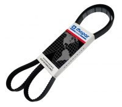
1996 - 2002 Dodge Viper Accessory Drive Belt (non-AC) - 04763863AC
Part # 4763863AC
$75.00

1996 - 2002 Dodge Viper Clock Spring - 4848437AA 4848437
$175.00

1996 - 2002 Dodge Viper Door Switch - 04848150
$125.00
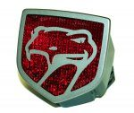
Out of stock1996 - 2002 Dodge Viper GTS / ACR Liftgate Sneaky Pete Brake Lamp - 04763042
Part # 4763042
$300.00

1996 - 2002 Dodge Viper Headlamp Switch -used- 04763135
Part # 4763135
$109.00
 Out of stock
Out of stock1996 - 2002 Dodge Viper Interior Fuse Box Cover - 04848773AB
Part # 04848773AB
$120.00
1996 - 2002 Dodge Viper Key Fob Transmitter - 04865431AA REMOTE
Part # 4865431AA
$179.00
 Out of stock
Out of stock1996 - 2002 Dodge Viper Keyless Entry Alarm Module w/Key Fobs - 05015148AC
Part # 5015148AC 4848832AG
$415.00

1996 - 2002 Dodge Viper Left Window Regulator - 04763283
$949.99
 Out of stock
Out of stock1996 - 2002 Dodge Viper Rear Body Fuse Block Cover - 04848297
Part # 04848297
$30.00
 Out of stock
Out of stock1996 - 2002 Dodge Viper Right Tail Lamp -
Part # 4848420
$275.99
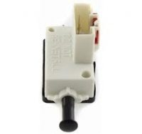
1996 - 2002 Dodge Viper RT/10 GTS Stop Lamp/Speed Control Switch -68003916AA
Part # 68003916aa
$35.00
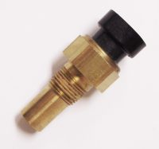
1996 - 2002 Dodge Viper Temperature Sending Unit - 04848110
$75.00

1996 - 2002 Dodge Viper Throttle Position Sensor - 04874371AB
$99.00
 Out of stock
Out of stock1996 - 2002 Dodge Viper Windshield Wiper Controller - 04848291
Part # 04848291
$125.00
 Out of stock
Out of stock1996 - 2004 Dodge Viper Air Idle Speed Motor Control Valve - 04778637AB Up to 8/24/2004
Part # 04778637AB
$175.00

1996 - 2006 Dodge Viper Camshaft Sensor - 05245084 aftermarket
Part # 05245084 PC142
$135.00

1996 - 2006 Dodge Viper NEW Camshaft Sensor - 05245084 *FACTORY*
Part # 05245084 PC142
$999.99

1996 - 2006 Dodge Viper Used Camshaft Sensor - 05245084 used
$85.00
 Out of stock
Out of stock1996 Dodge Viper RT/10 Plug Wire Set - 04798736AB
Part # 4798736AB
$154.00

1996.5 - 2002 Dodge Viper Spark Plug Wire Set - 04883365AA
Part # 4883365AA
$199.00
 Out of stock
Out of stock1997 - 2000 Dodge Viper EXPORT Key Fob Transmitter - 04848151
Part # 04848151
$249.99
 Out of stock
Out of stock1997 - 2002 Dodge ViperAir Bag Control Module - 04848802AE
Part # 04848802AE
$450.00

1997 - 2006 Dodge Viper Duty Cycle Purge Solenoid - 04669475AB
Part # 4669475AB
$45.00

1997 - 2010 Dodge Viper Power Distribution Relay - 04727370AA
$24.00
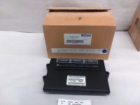
Out of stock1997 Dodge Viper NEW OEM Factory Engine Control Module - R4848702AF 04848702AE
Part # 04848702AE 04848702AF R4848702AF
$1,295.00

1997-2002 Dodge Viper Hood Switch - 04687594
$29.00
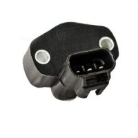
Out of stock1998 - 2006 Dodge Viper SRT10 Throttle Position Sensor - 04686360AC
Part # 04686360AC
$169.00

1998 - 2010 Dodge Viper Clutch Starter Interlock Switch - 53007944AB
Part # 53007944AB
$160.00

1998 Dodge Viper Front Upstream Exhaust O2 Sensor - 56041212
Part # 56041212
$110.00

1998 Dodge Viper Rear Downstream Exhaust O2 Sensor - 56041212AB
Part # 56041212AB
$150.00
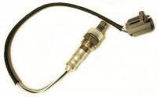
Out of stock1999 - 2002 Dodge Viper Front Exhaust O2 Sensor - 56041212AE
Part # 56041212AE
$105.00
 Out of stock
Out of stock1999 - 2002 Dodge Viper Rear Exhaust O2 Sensor - 56041212AF
Part # 56041212AF
$110.00
 Out of stock
Out of stock2000 DODGE VIPER MODULE, ENGINE CONTROL JTEC 4865406AC
Part # 4865406AC
$950.00

2001 Dodge Viper Engine Controller Module - 04865667AG
Part # 04865667AG
$1,149.00
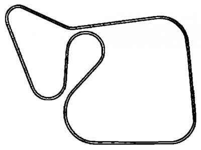
Out of stock2003 - 2006 Dodge Viper Accessory A/C Drive Belt - 05037206AD
Part # 05037206AD
$52.00
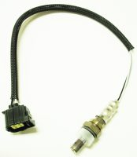
2003 - 2006 Dodge Viper Front Exhaust O2 Sensor - 56041699AA
Part # 56041699AA
$183.00
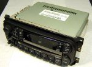
2003 - 2006 Dodge Viper Radio 6-CD Disk Changer w/Equalizer - 56038622AJ 05064038AC
$600.00
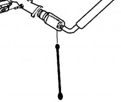
Out of stock2003 - 2006 Dodge Viper Rear Exhaust O2 Sensor - 56041706AA
Part # 56041706AA
$120.00
 Out of stock
Out of stock2003 - 2006 Dodge Viper SRT10 Air Charge Temperature Sensor - 04606487AB
Part # 04606487AB
$45.00

2003 - 2006 Dodge Viper SRT10 Alternator Assembly - 05037198AA
Part # 05037198AA
$630.00
 Out of stock
Out of stock2003 - 2006 Dodge Viper SRT10 Export Instrument Cluster - 05029722AC
Part # 5029722AC
$825.00
 Out of stock
Out of stock2003 - 2006 Dodge Viper SRT10 MAP Sensor - 04686684AB
Part # 04686684AB
$100.00

2003 - 2006 Dodge Viper SRT10 Spark Plug Set - RC12ECC
Part # RC12ECC
$59.00

2003 - 2008 Dodge Viper SRT10 Roadster Right Tail Lamp Assembly - 04865486AJ
Part # 4865486AJ
$400.00

2003 - 2010 Dodge Viper ABS Module 5066605AA
Part # 5066605AA
$864.00
 Out of stock
Out of stock2003 - 2010 Dodge Viper Alarm Indicator Lamp 05029051AB
Part # 05029051AB
$48.00

2003 - 2010 Dodge Viper Outer Door Handle switch HOUSING - LEFT 05029145AC
Part # 05029144AB 05029145AC
$495.00

2003 - 2010 Dodge Viper SRT10 Battery Cover Torx Bolt - 06508183AA
Part # 6508183AA
$14.95

2003 - 2010 Dodge Viper SRT10 Battery Retainer - 05202588
Part # 05202588
$39.00

2003 - 2010 Dodge Viper SRT10 Fog Light Access Panel - 04865822AB
Part # 4865822AB
$29.95

2003 - 2010 Dodge Viper SRT10 Interior Door Lock Switch - 04685435
$39.00

2003 - 2010 Dodge Viper SRT10 Keyless Entry Receiver Module - 04686669AC
Part # 04686669AC
$100.00
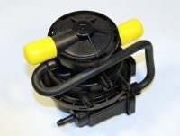
Out of stock2003 - 2010 Dodge Viper SRT10 Leak Detection Pump - 04891543AB
Part # 4891543AB
$155.00
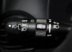
2003 - 2010 Dodge Viper SRT10 Multi-Function Light Switch - 5066185AA
Part # 5066185AA 04671594af
$125.00

2003 - 2010 Dodge Viper SRT10 Satellite Receiver to Radio Cable - 05066203AA
Part # 05066203AA
$69.00
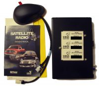
2003 - 2010 Dodge Viper SRT10 Sirius Radio Receiver & Antenna - 82206488AB
Part # 82206488AB
$425.00
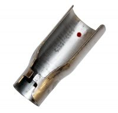
2003 - 2010 Dodge Viper SRT10 Spark Plug Heat Shield - 05037104AB
Part # 5037104AB
$14.50
 Out of stock
Out of stock2003 - 2010 Dodge Viper SRT10 Temperature Control Assembly - 04865810AD
Part # 4865810AD
$104.00

2003 - 2010 Dodge Viper SRT10 Tire Air Compressor - 68082668AA
Part # 68082668AA
$139.00
 Out of stock
Out of stock2003 - 2010 Dodge Viper Under Hood Fuse Block Cover - 68027689AB
Part # 68027689AB
$22.00
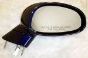
2003 - 2010 Viper SRT LEFT ( drivers ) Outside Door Mirror -- Violet -- 0TR37FCVAD
Part # 0TR37FCVAD
$150.00

2003 - 2010 Viper SRT RIGHT ( passenger ) Outside Door Mirror -- GRAPHITE -- 0TR2TTRMA
Part # 0TR2TTRMA
$150.00

2003 - 2010 Viper SRT Right ( passenger ) Outside Door Mirror -- RED - 0TR36TRMAC
Part # 0TR36TRMAC
$125.00
 Out of stock
Out of stock2003 - 2013 Dodge Viper SRT10 Left Window Regulator - 0486Z5611AH
Part # 4865611AD
$799.00
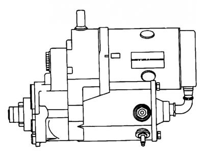
2003 - 2017 Dodge SRT Viper Starter - 5037199AB
Part # 5037199AB
$524.00
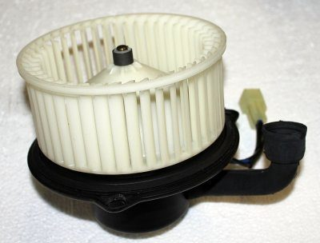
2003 - 2017 Dodge Viper SRT10 HVAC Blower Motor - 05093248AB
Part # 5093248AB
$200.00

2003 Dodge Viper SRT10 Headlamp to Dash Wiring Harness - 04865470AH
$825.00
 Out of stock
Out of stock2003 Dodge Viper SRT10 Left Door Wiring Harness - 04865467AE
Part # 04865467AE
$100.00

2003 Dodge Viper SRT10 Right Door Wiring Harness - 04865466AE
Part # 04865466AE
$105.00

2003 Dodge Viper SRT10 Spark Plug Wire Set - 05093789AA
$215.00

2003-2006 Dodge Viper Instrument Cluster Speedometer Tachometer 04865589AE
Part # 04865589AE
$1,150.00

2003-2006 Dodge Viper Instrument Cluster Speedometer Tachometer 5030485AC
Part # 5030485AC
$350.00

2003-2010 Dodge Viper Front Wiper Arm and Blade Right Side
Part # 04865506AB
$132.00
 Out of stock
Out of stock2003-2010 Dodge Viper SRT10 Keyless Entry Remote Transmitter - 04602260AD
Part # 4602260AD
$84.00
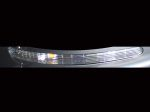
Out of stock2003-2010 Dodge Viper SRT10 LH Reverse/Turn Signal Lamp
Part # 4865489AF
$113.00
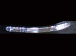
2003-2010 Dodge Viper SRT10 Right Reverse/Turn Signal Lamp
$113.00
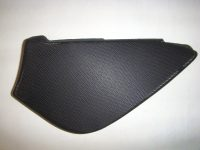
2003-2010 Dodge Viper SRT10 Speaker Grill Dash Left Tweeter 0TV67DX9AA
Part # 0TV67DX9AA
$39.00

2003-2010 Dodge Viper SRT10 Speaker Grill Dash Right Tweeter 0TV68DX9AA
Part # 0TV68DX9AA
$29.00

2003-2010 Viper SRT RIGHT ( passenger ) Outside Door Mirror - ANACONDA GREEN 0TR36HGRAD
Part # 0TR36HGRAD
$150.00

2004 - 2005 Dodge Viper SRT10 Headlamp to Dash Wiring Harness - 05029680AD
$995.00
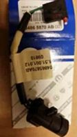
2004 - 2010 Dodge Viper Outer Door Handle SWITCH 05029677AA
Part # 05029677AA
$145.00

2004 Dodge Viper SRT10 Right Side Body Wiring Harness - 05029822AA
Part # 05029822AA
$75.00

2004 Dodge Viper SRT10 Spark Plug Wire Set - 05135171AA
$345.00
 Out of stock
Out of stock2005 - 2008 Viper Radio AM/FM with CD EXPORT VERSION - 05091610AC Dodge
Part # 05091610AC
$295.00

2005 - 2010 Dodge Viper SRT10 Left Door Wiring Harness - 05029927AB
Part # 5029927AB
$325.00

2005 - 2010 Dodge Viper SRT10 Right Door Wiring Harness - 05030502AA
$179.00
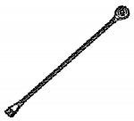
2005 - 2013 Dodge SRT Viper Knock Sensor - 05033316AB
$129.00
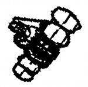
2005 - 2013 Dodge Viper SRT Viper Crankshaft Position Sensor - 05033307AC
$38.00

2005 Dodge Viper SRT10 Spark Plug Wire Set - 05166556AA
$342.00
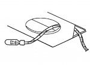
2006 - 2010 Dodge Viper SRT10 Coupe Liftgate Courtesy Lamp Wiring - 05030303AB
Part # 05030303AB
$20.00

2006 - 2010 Dodge Viper SRT10 Coupe Right Tail Light Lamp Housing- 05030320AB
Part # 5030320AB
$324.00
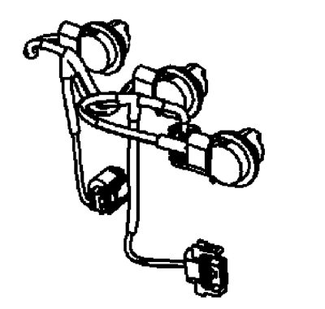
2006 - 2010 Dodge Viper SRT10 Coupe Tail Lamp Wiring Harness - 05030304AB
Part # 05030304AB
$66.00

2006 Dodge Viper SRT10 Spark Plug Wire Set - 05135171AA
$600.00
 Out of stock
Out of stock2008 - 2010 Dodge Viper Accessory A/C Drive Belt - 05037862AD
Part # 05037862AD
$34.00

2008 - 2010 Dodge Viper Driver Airbag Horn Center - 1CZ83DX9AD
$1,128.00
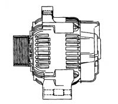
2008 - 2010 Dodge Viper SRT10 Alternator Assembly - 05037198AC
$685.00

2008 - 2010 Dodge Viper SRT10 Powertrain Control Module - 05029932AF
$1,400.00
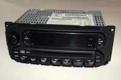
2008 - 2010 Dodge Viper SRT10 Radio AM/FM/CD and MP3 - 05064575AA
$612.00

2008 - 2010 Dodge Viper SRT10 Rear Downstream Exhaust O2 Sensor - 56029050AA
Part # 56029050AA
$90.00
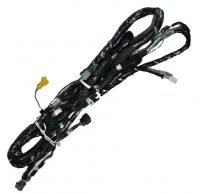
Out of stock2008 - 2010 Dodge Viper SRT10 Right Side Body Wiring Harness - 05030446AC
Part # 5030446AC
$135.00
 Out of stock
Out of stock2008 - 2010 Viper SRT10 Race Engine Controller - P5155254AB
Part # P5155254AB
$1,375.00
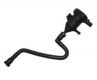
2008 - 2013 Dodge SRT Viper Linear Purge Valve - 04891731AA
Part # 4891731AA
$11.00

2008 - 2013 Dodge SRT Viper Mirror Switch - 04608505AF
Part # 04608505AF
$39.00
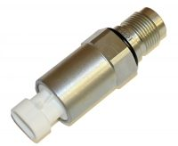
2008 - 2013 Dodge SRT Viper Transmission Skip Shift Solenoid - 68029166AA
Part # 68029166AA
$127.50

2008 - 2013 Dodge Viper Spark Plug Wire Set - 68027788AB
$105.00
2008 - 2013 Dodge Viper SRT10 Spark Plug Set - SVRE10PMC5
Part # SVRE10PMC5
$110.00
2010 Chrysler Dodge Jeep RB1 Navigation Update Disc - 05064033AJ
$110.00
 Out of stock
Out of stock92 - 96 VIPER AMLIFIER (AUDIO) 04643022 04709205
Part # 04709205 04643022
$150.00
 Out of stock
Out of stock92-96 VIPER RT10 STOCK CASSETTE RADIO W/BEZEL 04643021
Part # 04643021
$500.00
94 - 95 Dodge Viper SBEC Powertrain Control Module - 04763555
$1,225.00

Dodge Viper GTS-R 8.5 mm Spark Plug Wire Set - P4876844
Part # P4876844
$76.00
Mopar Battery Tender/Charger 82213378
$125.00
TAKE OUT! 1992 - 1994 Dodge Viper RT/10 Keyless Entry Module - 04759220 USED
Part # 04759220
$300.00
 Out of stock
Out of stockUsed Taillight
Part # 4642103
$399.99

*used* 1996 - 2002 Dodge Viper Upper Engine Wiring Harness - 4763760AD
$295.00
009 1992 - 1996 DODGE VIPER CASSETTE RADIO 4708187
$700.00
03-17 DODGE VIPER REPLACEABLE HEADLAMP BULB 04865941AA HIGH INTENCE
$75.00
05-06 VIPER WIRING HARNESS 05029914AC HEADLAMP TO COWL, EXPORT
$1,495.00
1992 - 1995 Dodge Viper RT/10 Camshaft Sensor - 053006563
$159.00
1992 - 1996 Dodge Viper Oil Pressure Switch - 33004791ab
$89.00
1992 - 1996 Dodge Viper Temperature Sending Unit - 56027012
Part # 56027012
$45.00
1992 - 2002 Dodge Viper Left Headlight Assembly - 04848063AD
$795.00
Out of stock1992 -1996 Dodge Viper RT/10 Right Tail Lamp - 04642102
Part # 4642102
$329.00
1992-1996 Gen1 Dodge Viper Alarm Module - Security Alarm 04686003
$425.00
1994 - 1995 Dodge Viper Upper Engine Wiring Harness - 04763548
$605.00
1994 - 1996 Dodge RAM V-10 Crankshaft Position Sensor - 56041041 53006562
$175.00
1996 - 2000 Dodge Viper Fuse Access Panel Cover - 04848773
$120.00
1996 - 2002 Alternator Assembly - 04848662AB 4848662 Dodge Viper
$249.00
1996 - 2002 Dodge Viper Left Tail Lamp - 04848421
Part # 4848421
$375.00
1996 - 2002 Dodge Viper Oil Pressure Switch - 04848295AB
Part # 4848295AB
$149.00
1996 1997 1998 1999 2000 2001 2002 AMPLIFIER 4763070
$250.00
Out of stock1996-2003 DODGE VIPER BATTERY TEMPERATURE SENSOR #56028194
Part # 56028194
$14.00
1997 - 2002 Dodge Viper Alpine Stereo AM/FM with CD
$202.00
1997 - 2003 Dodge RAM V-10 Crankshaft Position Sensor - 46027864 56027864
$175.00
1997 - 2006 Dodge Viper Coil / Ignition Pack Four Lead - 56032521AC
Part # 56032521AC
$295.99
1997 - 2006 Dodge Viper Coil / Ignition Pack Six Lead - 56032520AF
Part # 56032520AF
$140.00
1998 - 2002 Dodge Viper Interior Single Gang Window Switch - 04685434
$100.00
1998 Dodge Viper NEW Engine Control Module - 4854704AD
$999.00
1998 Dodge Viper RT/10 Body Wiring Harness 04848158AH
$100.00
2002 Dodge Viper NEW OEM Factory Engine Control Module - 5029712AA
$1,575.00
2003 - 2004 Dodge Viper SRT Viper Crankshaft Position Sensor - 04727451AA
$42.00
2003 - 2005 Dodge Viper SRT10 Left Back Up / Reverse Lamp Assembly - 04865489AD
$113.00
2003 - 2008 Dodge Viper SRT10 CENTER STOP/ LICENSE Lamp Wiring - 04865897AE
Part # 55156010AA
$40.00
2003 - 2008 Dodge Viper SRT10 Roadster Left Tail Lamp Assembly - 04865487AJ
Part # 4865487AJ
$406.00
2003 - 2008 Dodge Viper SRT10 Side Repeater Lamp Wiring - 55156010AA
$40.00
2003 - 2009 Dodge Viper SRT10 Headlamp Jumper Wiring - 05030505AA
$115.00
2003 - 2009 Dodge Viper SRT10 Headlamp Jumper Wiring - 05030505AA
$125.00
2003 - 2010 complete SRT HVAC System
Part # 4865642AG
$1,000.00
2003 - 2010 Dodge Viper High Note Horn - 04760944AF
Part # 4760944AF
$15.00
2003 - 2010 Dodge Viper HVAC Resistor - 05014212AA
Part # 05014212AA
$229.00
2003 - 2010 Dodge Viper Inside Door Handle SWITCH 04865870AB
$57.00
2003 - 2010 Dodge Viper Low Note Horn - 04760943AF
$15.00
Out of stock2003 - 2010 Dodge Viper Oil Pressure Sending Unit - 05149064AA
Part # 05146064AA
$63.00
2003 - 2010 Dodge Viper Outer Door Handle switch HOUSING - Right 05029144AB
Part # 05029144AB
$300.00
2003 - 2010 Dodge Viper SRT10 Battery Temperature Sensor - 056041053
$49.00
2003 - 2010 Dodge Viper SRT10 Clockspring - 04671789AE
Part # 04671789AE
$100.00
2003 - 2010 Dodge Viper SRT10 Fog Lamp Bracket - 05029228AA
Part # 05029228AA 53108529
$100.00
Out of stock2003 - 2010 Dodge Viper SRT10 Fog Light Assembly - 05029226AB
Part # 5029226AB 5029228AA
$135.00
2003 - 2010 Dodge Viper SRT10 Fog Light Replacement Bulb - L0009145
Part # L0009145
$18.45
2003 - 2010 Dodge Viper SRT10 Interior Window Switch - 04608633AD
Part # 04608633AD
$88.00
2003 - 2010 Dodge Viper SRT10 iPod Interface Kit - 82209616
Part # 82209616
$214.00
2003 - 2010 Dodge Viper SRT10 Left Turn Signal / Reverse Lamp Assembly - 04865489AF
Part # 04865489AF
$192.00
2003 - 2010 Dodge Viper SRT10 Power Distribution Center Bracket - 05029294AD
Part # 5029294ad
$17.00
2003 - 2010 Dodge Viper SRT10 RB1 Navigation Radio Package - 82208715AG
$1,795.99
2003 - 2010 Dodge Viper SRT10 Rear High Mounted Stop Lamp 04865655AE
$140.00
2003 - 2010 Dodge Viper SRT10 Right Turn Signal / Reverse Lamp Assembly - 04865488AF
Part # 04865488AF
$200.00
2003 - 2010 Dodge Viper SRT10 Roadster Tail Lamp Wiring Harness - 05030506AA
$43.00
Out of stock2003 - 2010 Dodge Viper SRT10 Subwoofer Assembly - 04865995AE
Part # 04865995AE
$195.00
2003 - 2010 Dodge Viper SRT10 Wiper Switch - 05019710AA
Part # 5019710AA
$159.00
2003 - 2010 Dodge Viper SRT10 Wiring Harness Bracket - 05029211AC
$22.00
2003 - 2010 Viper SRT LEFT ( Drivers ) Outside Door Mirror -- VIPER BLUE -- 0TR37SBEAD
Part # 0TR37SBEAD
$150.00
2003 - 2010 Viper SRT LEFT ( drivers ) Outside Door Mirror --Silver-- 0TR37WS2AD
Part # 0TR37GBCAD
$150.00
2003 - 2010 Viper SRT RIGHT ( passenger ) Outside Door Mirror -- VIPER BLUE -- 0TR36SBEAD
Part # 0TR36SBEAD
$150.00
2003 - 2010 Viper SRT Right ( passenger ) Outside Door Mirror --ANACONDA GREEN -- 0TR36HGRAD
Part # 0TR36HGRAD
$150.00
2003 - 2010 Viper SRT RIGHT Outside Door Mirror -- Silver -- 0TR36WS2AD
Part # 0TR36WS2AD
$150.00
2003 - 2013 Dodge SRT Viper Headlamp Socket - 05029065AA
$19.00
2003 - 2013 Dodge SRT Viper Headlamp Socket - 05029065AA
$22.00
2003 - 2013 Dodge SRT Viper Push Button Start Switch - 04865676AC
$59.00
2003 - 2017 Dodge Viper SRT10 Right Window Regulator - 04865610AI
Part # 4865610AH
$999.00
2003 Dodge Viper Engine Ground Wire 5037139AB
$22.00
Out of stock2003 Dodge Viper Module, Engine Controller, NEW OEM 4865501ak *ADD $125 CORE CHARGE*
$475.00
2003 Dodge Viper Roadster Underbody Wiring AFTER 02/10/2003 - 04865468AG
Part # 04865468AG
$227.00
2003 Dodge Viper SRT10 Negative Battery Cable - 05029668AA
$25.00
2003-2006 DODGE VIPER MODULE, AIR BAG RESTRAINT CONTROLLER 4865582AB 4865582AC
Part # 4865582AB 4865582AC
$199.99
Out of stock2003-2006 Dodge Viper Radio AM/FM with 6-CD Changer [JAA]
Part # 05091507AE
$612.00
Out of stock2003-2010 Dodge Viper SRT10 Audio Amplifier - Recycled Take Off 04865994AE
Part # 4865994AE 4865994ac
$275.00
Out of stock2003-2010 Dodge Viper SRT10 Right Headlight Assembly - 04865484AI
Part # 4865484AI
$1,195.00
Out of stock2003-2010 Dodge Viper SRT10 Roadster Left Tail Lamp
Part # 4865487AJ
$385.00
2003-2010 Dodge Viper SRT10 Roadster Right Tail Lamp
$385.00
2003-2010 Viper SRT LEFT (drivers) Outside Door Mirror - VENOM RED - 0TR37ERSAD
Part # 0TR37ERSAD
$150.00
Out of stock2003-2010 Viper SRT10 Left Headlight Assembly - 04865485AI Dodge
Part # 4865485AI
$1,195.00
2003-2010 Viper SRT10 Right Headlight Assembly - 04865484AI
$1,195.00
2004 - 2006 Dodge Viper Main Under Body Wiring Harness 05029946AC
$315.00
2004 2008 Dodge Viper SRT10 Gauge Pac Mopar Part 5029636AA
Part # 5029636AA
$621.00
2004 Dodge Viper SRT10 Ignition Controller - 05029700AI
$360.00
2005 - 2010 Dodge Viper SRT10 Export Headlight Left - 05030187AA
$4,395.00
2005 - 2010 Dodge Viper SRT10 Export Headlight Right - 05030188AA
$4,395.00
2006 - 2010 Dodge Viper SRT10 Coupe Left Side Marker Lamp - 05030323AA
$85.00
2006 - 2010 Dodge Viper SRT10 Coupe Left Tail Light Lamp Housing - 05030321AB
Part # 5030321AB
$375.00
2006 - 2010 Dodge Viper SRT10 Coupe Right Side Marker Lamp - 05030322AA
$85.00
Out of stock2006-2010 Dodge Viper Coupe Brake Light High Mounted Lamp - 05030107AB
Part # 5030107AB
$299.00
2008 - 2010 Dodge Viper Coil / Ignition Single Lead - 5037127AB
$99.99
2008 - 2010 Dodge Viper Coupe Liftgate Actuation Switch - 68035319AA
Part # 68035319AA
$285.00
2008 - 2010 Dodge Viper ECM Wiring Protection Cover
Part # 05181368AB
$9.00
2008 - 2010 Dodge Viper SRT10 Front Air bag Sensor - 4896061AB
Part # 4896061AB
$175.00
2008 - 2010 Dodge Viper SRT10 Front Air bag Sensor - 4896061AB
Part # 4896061AB
$44.00
2008 - 2010 Dodge Viper SRT10 Occupant Classification Module - 04896038AC
$150.00
2008-2010 Dodge Viper Main Body Wiring Harness 05030736AD
Part # 05030736AD
$349.00
2011 Chrysler Dodge Jeep RB1 Navigation Update Disc - 05064033AK
$147.00
2012 Chrysler Dodge Jeep RB1 Navigation Update Disc - 05064033AL
$147.00
92 VIPER ENGINE CONTROL MODULE SMEC 4708421
Part # 04708421
$1,575.00
Out of stock92 VIPER WIPER MOTOR 04643064 LH SIDE DODGE
Part # 04643064
$350.00
92-95 VIPER RT/10 HEATER MOTOR ASSY W/ HOUSING 04709169
Part # 04709169
$225.00
92-96 VIPER RT10 ENGINE HARNESS P04848845
$350.00
94 - 02 Dodge RAM V10 Camshaft Sensor - 56027860 AFTERMARKET
$135.00
97-02 VIPER SPEAKER (DOOR MOUNT) 04763072AB
$35.00
Battery Cable, Negative
$19.00
Out of stockDodge Viper Tire Sealant Inflator
Part # 05170751AA
$46.00
Right Headlight Assembly - SRT10 (04865484AA)
$822.00
SRT HVAC System 2003
$1,464.00
Tire Pump
$77.00